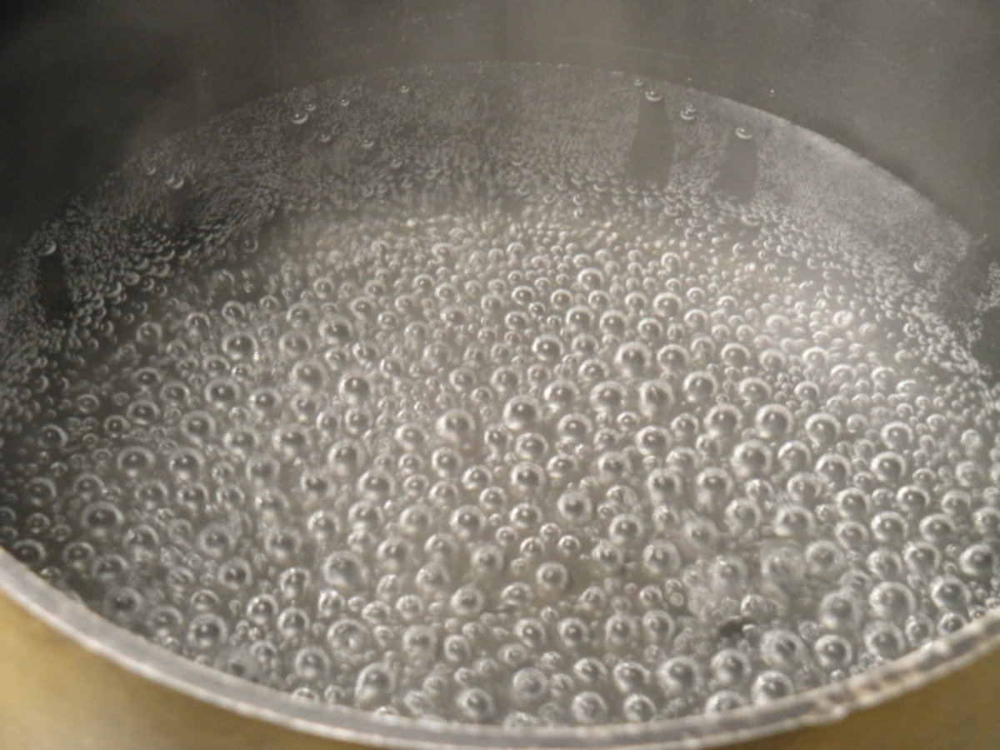

Home
Odin's Ice Cubes

Description
Contrary to many beliefs, boiled water requires no witchcraft or spells incantations. Just a metal container and a heating source!
Ingredients
- Some metal container (preferably with handles)
- A water source (clean one if possible)
- Salt (for sickos)
Steps
- Grab your metal container (commonly known as a pan, a stockpot, ...), I'll refer to it as a 'pot' from hereon.
- Place your pot in the sink under the tap. If you have never used a sink before, it is the large depression in your counter top. (If you live with someone else, they may have filled it with dirty dishes; in this case, wash them or simply remove them from the sink and place them in the oven — someone else will eventually discover them there and wash them.)./li>
- Turn the water knob to the "on" position, the direction doesn't matter. Hot, cold or lukewarm water will all boil under the duress of time and heat.
- Fill the pot within a centimeter or two of the rim.
- Lift pot from sink and transfer to stove. (Although appearances may vary, the stove is the thing with 4 or more circular metal bands on top of it; alternately, it may be a completely flat black glass surface. If you are unsure, ask your family, roommate, or neighbor for guidance.).
- Find knob on stove that corresponds to the "burner" you have placed your pot on. In addition to words like "Right Front" or "Left Rear," there are usually little pictures near the knobs to indicate position.
- Turn knob to "High" and wait until water boils. Depending on strength of your stove and amount of water, the boiling time may vary.
- STOP WATCHING THE POT! A WATCHED POT NEVER BOILS. Thankfully, neither does it unwatched, but with enough time the water itself will certainly boil.
- Eventually, the water will start to ripple, and bubbles will slowly drift to the surface, wait for this effect to intesify until the water seems to be shaking and bubbling-up a lot.
- That's it then, you're done. Congratulations on boiling water.